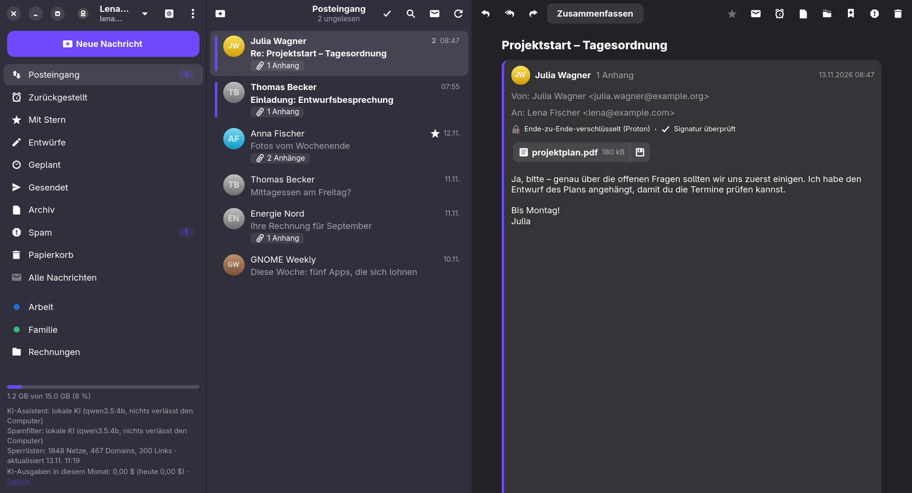

Klient
Ein E-Mail-Programm für GNOME mit eingebauter Unterstützung für Proton Mail, PGP-Verschlüsselung und einem Spamfilter, der von künstlicher Intelligenz gesteuert wird – in der Cloud oder direkt auf Ihrem Computer.
Überblick

KLIENT_DEMO=1 klient aus.Klient ist ein E-Mail-Programm für Linux mit der GNOME-Arbeitsumgebung. Es verbindet sich direkt mit Proton Mail (ohne Proton Bridge) und mit gewöhnlichen Postfächern über IMAP und SMTP. Jede neue Nachricht wird zuerst vom Spamfilter beurteilt; erst danach wird sie angezeigt und gemeldet.
Mehrere Dienste in einem Fenster
Proton Mail, Gmail, Seznam.cz und jedes IMAP/SMTP-Postfach, umgeschaltet in der Seitenleiste.
Verschlüsselung überall
Die Ende-zu-Ende-Verschlüsselung von Proton und PGP/MIME für die übrigen Dienste, mit automatischer Suche nach den Schlüsseln der Empfänger.
KI-Spamfilter
SPF/DKIM/DMARC, Sperrlisten und Ihre eigenen Listen als Anhaltspunkte für die Entscheidung der KI.
KI-Assistent
Zusammenfassungen, Antwortvorschläge, „Ihre E-Mails fragen“, Einsortieren in Labels und eine Morgenübersicht.
Lokale KI
Das Modell läuft über ein verwaltetes Ollama auf Ihrem Computer – der Inhalt Ihrer Nachrichten geht nirgendwohin.
Bequemes Senden
Senden rückgängig machen, geplantes Senden, ein Editor für formatierten Text und Anhänge.
Installation
Von GitHub
Unter Fedora (44 und neuer) installieren Sie die neueste Version mit einem einzigen Befehl direkt von GitHub:
sudo dnf install https://github.com/Imbecile6197/klient/releases/latest/download/klient.x86_64.rpmUnter Ubuntu (26.04 LTS und neuer) laden Sie das Paket herunter und installieren es:
wget https://github.com/Imbecile6197/klient/releases/latest/download/klient_amd64.deb
sudo apt install ./klient_amd64.debSpätere Versionen lädt Klient selbst herunter – siehe Automatische Aktualisierungen.
Diese Dokumentation können Sie jederzeit aus Klient öffnen: Hauptmenü → Hilfe oder die Taste F1.
Sprache
Klient spricht Englisch, Tschechisch und Deutsch. Die Sprache richtet sich nach Ihren Systemeinstellungen; Sie können sie in Einstellungen → Allgemein → Sprache der Oberfläche ändern, sie gilt nach einem Neustart. Die KI antwortet in derselben Sprache – Zusammenfassungen, Antwortvorschläge, „Ihre E-Mails fragen“ und die Begründungen des Spamfilters.
Das Paket empfiehlt die Erweiterung gnome-shell-extension-appindicator; ohne sie zeigt GNOME das Symbol in der oberen Leiste nicht an.
Automatische Aktualisierungen
Einmal täglich prüft Klient die Versionen auf GitHub (nicht bei einer getakteten Verbindung). Eine neue Version lädt es im Hintergrund herunter und überprüft ihre SHA-256-Prüfsumme, die sowohl mit der Datei SHA256SUMS als auch mit dem von GitHub gemeldeten Digest übereinstimmen muss. Danach erhalten Sie die Benachrichtigung Eine neue Version von Klient ist bereit; die Schaltfläche Installieren fragt nach dem Administratorpasswort, installiert das Paket und startet Klient neu. Die Schaltfläche Neuerungen zeigt die Änderungen vor der Installation.
Nach einer Aktualisierung zeigt Klient, was sich seit der zuletzt verwendeten Version geändert hat. Die Liste können Sie jederzeit über das Hauptmenü → Neuerungen wieder öffnen.
Die Prüfung können Sie in Einstellungen → Allgemein → Aktualisierungen ausschalten oder von Hand starten. Ein aus dem Quellcode gebauter Klient meldet eine neue Version nur.
Läuft Klient (zum Beispiel im Hintergrund), während Sie eine neue Version von Hand installieren, bemerkt es das innerhalb einer Minute und bietet einen Neustart an. Sie müssen es nicht selbst suchen und beenden.
Aus dem Quellcode bauen
sudo dnf install golang gcc gtk4-devel libadwaita-devel gobject-introspection-devel webkitgtk6.0-devel
make build # der erste Build dauert eine Weile (CGo-Bindungen von GTK)
make run
make install # nach ~/.local, samt .desktop-Datei und Symbol
make rpm VERSION=0.7.3
packaging/deb.sh 0.7.3 # Ubuntu-Paket, gebaut in einem podman-ContainerKonten und Dienste
Das erste Konto fügen Sie im Anmeldebildschirm hinzu, weitere Konten in der Seitenleiste über den Kontowechsler → Konto hinzufügen. Neue E-Mails, der Spamfilter und Benachrichtigungen funktionieren für alle Konten gleichzeitig, auch für die gerade nicht geöffneten.
Alle Konten zusammen
Bei zwei oder mehr Konten bietet der Kontowechsler Alle Konten: Posteingang, Mit Stern, Gesendet, Archiv, Spam und Papierkorb aller Konten in einer Liste, nach Zeit sortiert. Jede Nachricht zeigt die Adresse ihres Kontos, und alles, was Sie damit tun – lesen, antworten, verschieben, löschen –, geschieht in diesem Konto; eine Antwort wird von dort geschrieben. Eine neue Nachricht wird vom ersten Konto geschrieben. Labels, Zurückstellen, Kontakte und Kontoeinstellungen bleiben in den einzelnen Konten. Klient merkt sich die Ansicht für den nächsten Start.
Proton Mail
Klient meldet sich direkt über die Proton-API an, einschließlich Zwei-Faktor-Authentifizierung und Zwei-Passwort-Modus. Das Passwort wird nicht gespeichert – nur das Sitzungstoken und ein abgeleiteter Schlüssel zum Entsperren des Postfachs bleiben im Schlüsselbund.
Gmail
- Schalten Sie in Ihrem Google-Konto die Bestätigung in zwei Schritten ein (ohne sie bietet Google keine App-Passwörter an).
- Erstellen Sie ein App-Passwort – eine Schaltfläche im Anmeldefenster von Klient öffnet direkt myaccount.google.com/apppasswords.
- In den Gmail-Einstellungen muss IMAP aktiviert sein.
- Wählen Sie in Klient Anderer Dienst → Gmail und geben Sie Ihre Adresse und das App-Passwort ein.
Gmail-Labels verhalten sich wie im Web: Ein hinzugefügtes Label markiert die Nachricht nur (sie bleibt im Posteingang), und beim Entfernen verschwindet nur das Label. Archivieren verschiebt eine Nachricht nach „Alle Nachrichten“, der Ordner „Markiert“ entspricht dem Stern, und der Ordner „Wichtig“ ist ausgeblendet.
Seznam.cz
Unterstützte Domains: seznam.cz, email.cz, post.cz, spoluzaci.cz und eigene Domains, die bei Seznam gehostet werden. Wenn Sie die Zwei-Faktor-Authentifizierung eingeschaltet haben, erstellen Sie in den Einstellungen Ihres Seznam-Kontos ein App-Passwort und melden Sie sich damit an.
Anderes Postfach (IMAP/SMTP)
Klient findet die Server selbst – bei bekannten Anbietern, in der Datenbank von Thunderbird (ISPDB) und anhand der MX-Einträge der Domain. Gelingt das nicht, tragen Sie sie von Hand ein. Schlägt eine Anmeldung fehl, wird die vollständige Meldung des Servers angezeigt.
Nicht vertrauenswürdige Zertifikate. Lässt sich das Zertifikat eines Servers nicht überprüfen (es ist abgelaufen, selbstsigniert oder für einen anderen Namen ausgestellt), zeigt Klient seine Details – den Grund, für wen und von wem es ausgestellt wurde, seine Gültigkeit und den SHA-256-Fingerabdruck – und lässt Sie diesem Zertifikat vertrauen. Klient akzeptiert dann genau dieses Zertifikat für den Server; ändert es sich, werden Sie erneut gefragt. Die Überprüfung wird nie ganz ausgeschaltet, denn eine nicht überprüfte Verbindung könnte ohne jede Warnung abgefangen werden.
Was die einzelnen Dienste unterstützen
| Funktion | Proton | Gmail | Seznam / IMAP |
|---|---|---|---|
| Neue E-Mails sofort | ja | IMAP IDLE | IMAP IDLE |
| Ordner | ja | ja | ja |
| Labels | ja | ja | nein |
| Unterhaltungen | Server | References | References |
| Suche im Nachrichtentext | nein | ja | ja |
| Unterhaltungen zurückstellen | Server | Klient | Klient |
| Geplantes Senden | Server | Klient | Klient |
| Verschlüsselung | Proton E2E | PGP/MIME | PGP/MIME |
| Adressvorschläge aus | Proton-Kontakten | letzten Adressen | letzten Adressen |
| Automatische Antwort | bezahlter Tarif | nein | nein |
| Belegung des Postfachs | ja | Kontingent | Kontingent oder belegter Platz |
„Klient“ bedeutet, dass die Anwendung die Funktion selbst über die Ordner Zurückgestellt und Geplant auf dem Server bereitstellt. Das funktioniert, solange Klient läuft (im Hintergrund genügt); was in der Zwischenzeit verpasst wurde, wird gleich nach dem Start erledigt.
E-Mails lesen
- Eine dreispaltige Ansicht (Ordner – Liste – Nachricht), die sich an ein schmales Fenster anpasst.
- Unterhaltungen – Nachrichten werden zu Unterhaltungen gruppiert; bei Proton werden ältere Nachrichten einer Unterhaltung erst entschlüsselt, wenn Sie sie aufklappen. Das lässt sich in Einstellungen → Nachrichten ausschalten.
- HTML-E-Mails werden über WebKitGTK ohne JavaScript angezeigt. Externe Bilder und Zählpixel sind blockiert; Sie können sie für eine Nachricht oder dauerhaft für einen Absender erlauben.
- Anhänge erscheinen als Chips oben in der Nachricht – ein Klick öffnet den Anhang, der Pfeil speichert ihn.
- Suche (Strg+F) – bei Proton in Betreff, Absender und Empfängern; bei IMAP-Diensten auch im Nachrichtentext.
- Offline lesen – die letzten 500 Nachrichten (einstellbar) werden in einem verschlüsselten Cache aufbewahrt (AES-256-GCM mit dem Schlüssel im Schlüsselbund; die Texte von Proton-Nachrichten bleiben zusätzlich mit PGP verschlüsselt).
- Eine Anzeige der Postfachbelegung unten links. Meldet der Server kein Limit (Seznam), wird zumindest der belegte Platz angezeigt.
- Abmelden – eine Schaltfläche für Nachrichten aus Mailinglisten, die mit einem Klick abmeldet (RFC 8058).
- Drucken und Exportieren einer Nachricht in eine
.eml-Datei.
Schreiben und Senden
- Ein Editor für formatierten Text – fett, kursiv, unterstrichen, Listen, Links. Empfänger mit PGP erhalten eine Version als reinen Text.
- Antworten, Allen antworten, Weiterleiten (samt Anhängen).
- Anhänge bis 25 MB – genauso verschlüsselt wie der Text. Sie können Dateien in die Nachricht ziehen.
- Entwürfe werden automatisch gespeichert, wenn Sie das Fenster schließen (Esc), oder von Hand mit Strg+S.
- Eine Signatur – reiner Text oder HTML (Einstellungen → Nachrichten → Signatur → Format). Fügen Sie Ihr HTML ein, öffnen Sie eine .html-Datei oder beginnen Sie mit einer Vorlage; die Vorschau zeigt sie so, wie Empfänger sie sehen. In einer neuen Nachricht erscheint die Signatur als Vorschau, die Sie mit × entfernen können; Empfänger ohne HTML erhalten eine Version als reinen Text.
- Adressvorschläge aus Ihren Kontakten.
- Die Standardanwendung für
mailto:-Links – festzulegen in Einstellungen → Allgemein.
Rechtschreibprüfung
Falsch geschriebene Wörter werden beim Schreiben rot unterstrichen; ein Rechtsklick bietet Korrekturen, Zum Wörterbuch hinzufügen und Ignorieren. Mit deutscher Oberfläche werden Deutsch und Englisch gemeinsam geprüft – ein Wort ist richtig, wenn es in einer der Sprachen stimmt –, und die nächstliegenden Korrekturen stehen vorn. Zitierte Zeilen („> …“), Links, Adressen und Abkürzungen bleiben unberührt. Klient verwendet die Wörterbücher des Systems (Pakete hunspell-de und hunspell-en-US); das persönliche Wörterbuch teilt es mit anderen Anwendungen. Ausschalten lässt sich die Prüfung in Einstellungen → Nachrichten → Rechtschreibung prüfen.
Sendeverzögerung
Nach dem Senden wartet eine Nachricht einen Moment (standardmäßig 10 s), während eine Benachrichtigung mit der Schaltfläche Rückgängig herunterzählt. Die Dauer stellen Sie in Einstellungen → Nachrichten ein.
Postausgang
Eine Nachricht, die sich nicht senden lässt, geht nie verloren: Sie landet im Postausgang, der unter den Ordnern erscheint, solange er Nachrichten enthält. Nach einem Verbindungsfehler sendet Klient sie jede Minute selbst erneut; nach einem anderen Fehler (zum Beispiel einem abgelehnten Empfänger) wählen Sie Erneut senden, Bearbeiten oder Löschen. Der Postausgang liegt im verschlüsselten Cache des jeweiligen Kontos und übersteht einen Neustart.
Geplantes Senden
Der Pfeil neben der Schaltfläche „Senden“ bietet Vorgaben (morgen früh, morgen Nachmittag, Montagmorgen) oder ein eigenes Datum mit Uhrzeit. Bei Proton sendet der Server die Nachricht auch dann, wenn Ihr Computer ausgeschaltet ist; bei den übrigen Diensten sendet Klient sie. Geplante Nachrichten zeigen eine Leiste mit Countdown und einer Schaltfläche zum Abbrechen des Sendens.
E-Mails ordnen
- Ordner und Labels – Ihre eigenen Proton-Ordner und -Labels, IMAP-Ordner und Gmail-Labels. Nachrichten können Sie auf Ordner und Labels ziehen.
- Ordner verwalten – Rechtsklick (oder langes Drücken) auf einen Ordner in der Seitenleiste: Neuer Ordner (ein Schrägstrich legt ihn in einen anderen, z. B. „Arbeit/Projekte“; bei Proton kann es ein Label sein), Umbenennen, Löschen und In der Seitenleiste ausblenden. Ausgeblendete Ordner holen Sie mit Ausgeblendete Ordner anzeigen im selben Menü zurück.
- Papierkorb und Spam leeren – Rechtsklick auf Papierkorb oder Spam → Leeren löscht die Nachrichten darin endgültig. Einstellungen → Allgemein → Papierkorb und Spam erledigt das automatisch für Nachrichten, die älter als 7 bis 90 Tage sind, in jedem Konto.
- Stern, ungelesen, archivieren, Papierkorb.
- Mehrere Nachrichten auswählen – mit der Schaltfläche, Strg/Umschalt+Klick oder Strg+A.
- Zurückstellen (Strg+H) – die Unterhaltung verschwindet und kehrt zur gewählten Zeit in den Posteingang zurück.
Regeln für eingehende E-Mails
In Einstellungen → Regeln erstellen Sie Regeln wie „wenn Absender / Empfänger / Betreff einen Text enthält, dann …“ mit den Aktionen in einen Ordner verschieben, ein Label hinzufügen, als gelesen markieren oder einen Stern hinzufügen. Regeln werden nach der Spamprüfung auf neue E-Mails angewendet; der Menüpunkt Regeln auf den Posteingang anwenden wendet sie auch auf vorhandene E-Mails an.
Verschlüsselung und PGP
Proton Mail
Jede Nachricht wird entschlüsselt und ihre Signatur überprüft. Beim Senden wird für jeden Empfänger der stärkste verfügbare Schutz gewählt:
- Proton-Adressen – die Ende-zu-Ende-Verschlüsselung von Proton,
- externe Adressen mit bekanntem Schlüssel – PGP/MIME, das Formatierung, HTML-Signatur und Anhänge in einem verschlüsselten Teil zusammenhält. Klient verwendet den vom Empfänger veröffentlichten Schlüssel (WKD), den Schlüssel und die Einstellungen, die in Ihrem Proton-Kontakt hinterlegt sind (wie im Web), oder einen in Klient importierten Schlüssel,
- alle übrigen – unverschlüsselt, auf Wunsch mit einer PGP/MIME-Signatur (die Formatierung bleibt erhalten), und vor dem Senden erscheint eine Warnung.
Gmail, Seznam und IMAP
In Einstellungen → PGP erstellen Sie einen neuen Schlüssel für das Konto oder importieren Ihren privaten Schlüssel. Die Schlüsseldatei ist mit einer zufälligen Passphrase gesperrt, die im Schlüsselbund liegt. Danach gilt:
- Nachrichten an Personen mit bekanntem Schlüssel werden als PGP/MIME verschlüsselt, Nachrichten an alle anderen signiert,
- gemischte Empfänger erhalten zwei Versionen – eine verschlüsselte und eine signierte,
- mit Auch den Betreff verschlüsseln reist der Betreff innerhalb der Verschlüsselung (geschützte Header, wie in Thunderbird) und außen steht „...“; Ihre Kopie in „Gesendet“ behält den Betreff,
- Entwürfe, geplante Nachrichten und Kopien in „Gesendet“ werden auf dem Server nur für Sie verschlüsselt gespeichert,
- eingehende PGP/MIME-Nachrichten werden entschlüsselt und überprüft, auch mit geschütztem Betreff.
Ihr Schlüssel:
- ein neuer Schlüssel erhält eine Gültigkeit (1, 2 oder 5 Jahre oder keine) – ein ablaufender Schlüssel wird von selbst nicht mehr verwendet, wenn Sie ihn verlieren; Verlängern … erneuert ihn jederzeit,
- Auf keys.openpgp.org veröffentlichen … lädt Ihren öffentlichen Schlüssel hoch; nachdem Sie den Link bestätigt haben, den Ihnen der Server per E-Mail schickt, kann ihn jeder anhand Ihrer Adresse finden,
- Widerrufszertifikat speichern … – bewahren Sie es sicher auf; geht der Schlüssel verloren oder wird er gestohlen, veröffentlichen Sie es oder senden Sie es an Ihre Kontakte, und deren Programme verwenden den Schlüssel nicht mehr,
- der Schlüssel lässt sich sichern und entfernen.
Inline-PGP
Nachrichten, die direkt im Text verschlüsselt sind (-----BEGIN PGP MESSAGE-----, z. B. aus Mailvelope), werden entschlüsselt und ihre Signatur geprüft, auch wenn der Block in einer Antwort zitiert ist.
Wo Klient nach den Schlüsseln der Empfänger sucht
- im Web Key Directory der Domain des Empfängers – für gespeicherte Schlüssel einmal pro Woche erneut, um einen neueren Schlüssel zu bemerken,
- im Autocrypt-Header empfangener Nachrichten (Klient fügt ihn auch in eigene Nachrichten ein),
- bei von Hand importierten Schlüsseln – auch direkt aus einem
.asc-Anhang über eine Schaltfläche in der Nachricht, - optional auf keys.openpgp.org (Einstellungen → PGP).
Schlüssel der Kontakte und Schlüsselwechsel
Einstellungen → PGP → Schlüssel der Kontakte listet die gespeicherten Schlüssel auf. Ein Klick zeigt den vollständigen Fingerabdruck (vergleichen Sie ihn persönlich oder telefonisch mit dem Kontakt), die Benutzerkennungen, die Gültigkeit und die Herkunft, und Sie können ihn als Überprüft markieren.
Taucht für einen Kontakt ein anderer Schlüssel auf, ersetzt Klient den gespeicherten nur, wenn dieser automatisch gelernt wurde, nicht überprüft ist und der neue Schlüssel neuer ist. Andernfalls wartet der neue Schlüssel: Die Nachricht zeigt „Der Absender verwendet einen neuen Schlüssel …“, und im Detail des Schlüssels wählen Sie Neuen Schlüssel verwenden oder Alten Schlüssel behalten. Eine gefälschte Nachricht kann daher keinen Schlüssel austauschen, auf den Sie sich verlassen.
Nur verschlüsselt senden
Mit Einstellungen → PGP → Nur verschlüsselt senden (oder demselben Schalter im Nachrichtenfenster für eine einzelne Nachricht) wird eine Nachricht nicht gesendet, solange ein Empfänger keinen Schlüssel hat.
Ihren eigenen öffentlichen Schlüssel kann Klient ausgehenden Nachrichten automatisch anhängen (Einstellungen → Nachrichten).
Spamfilter
Die KI beurteilt jede neue Nachricht im Posteingang. Als Anhaltspunkte erhält sie:
- die Ergebnisse von SPF, DKIM und DMARC,
- die Markierungen von Proton,
- Treffer in Sperrlisten für IP-Adressen, Domains und Links,
- Ihre Listen erlaubter und blockierter Absender.
Eine Nachricht, deren Spam-Wahrscheinlichkeit die Schwelle erreicht (standardmäßig 0,7), wird in den Spam verschoben. Die Schwelle stellen Sie in Einstellungen → Spamfilter ein.
Erst prüfen, dann melden
Das gilt für alle Dienste. Während die Prüfung läuft, steht oben in der Liste „Der Spamfilter prüft N neue Nachrichten …“. Bleibt die Prüfung hängen, erscheint die Nachricht spätestens nach 6 Minuten. Dieses Verhalten schalten Sie mit dem Schalter Neue E-Mails erst nach der Prüfung anzeigen aus.
Sperrlisten
Sie werden automatisch alle 12 Stunden heruntergeladen: Spamhaus DROP (IPv4 und IPv6), URLhaus und OpenPhish. Ihren Status finden Sie in Einstellungen → Spamfilter.
OpenPhish führt einzelne Phishing-Seiten auf, daher vergleicht Klient ganze Links, nicht Domains: Eine schädliche Seite bei einem Linkverkürzer oder einem gemeinsam genutzten Hosting sperrt nicht die ganze Website. Ein Link zu einer Seite auf OpenPhish oder zu einem Host auf URLhaus macht die Nachricht zu Spam, egal was die KI sagt, auch von einem erlaubten Absender – auch dessen Konto kann gestohlen werden.
Vorhandene E-Mails prüfen
Der Menüpunkt Posteingang mit KI prüfen wendet den Filter auf die letzten 50 Nachrichten an.
Wenn Sie den KI-Filter ausschalten, erkennt Klient Spam nur anhand der Sperrlisten und Ihrer Listen.
KI-Assistent
Funktionen
- Zusammenfassung einer Nachricht und Antwortvorschlag.
- Bearbeiten und Übersetzen eines Entwurfs direkt im Editor.
- Ihre E-Mails fragen (Strg+J) – eine Frage in normaler Sprache; die KI findet die passenden Nachrichten und antwortet mit Verweisen auf ihre Quellen.
- Einsortieren in Labels – neue E-Mails erhalten ein passendes Label (Einstellungen → KI → Automatische Funktionen).
- Eine Morgenübersicht der ungelesenen E-Mails zu einer festgelegten Uhrzeit (standardmäßig 7:00); jederzeit öffnen lässt sie sich mit Übersicht der ungelesenen E-Mails (KI).
Anbieter
Der Assistent und der Spamfilter haben jeweils einen eigenen Anbieter und ein eigenes Modell – für den Spamfilter genügt meist ein günstigeres und schnelleres Modell. Die Listen-Schaltfläche neben dem Modell bietet die Modelle an, die für Ihr Konto verfügbar sind.
| Anbieter | Standardmodell des Assistenten | Standardmodell des Spamfilters | Schlüssel |
|---|---|---|---|
| Claude (Anthropic) | claude-opus-5 | claude-opus-5 | platform.claude.com |
| ChatGPT (OpenAI) | gpt-5.5 | gpt-5.4-mini | platform.openai.com |
| Gemini (Google) | gemini-3.1-pro-preview | gemini-3-flash-preview | aistudio.google.com |
| Mistral (EU-Server) | mistral-medium-latest | mistral-small-latest | console.mistral.ai |
| Lokale KI (Ollama) | qwen3.5:4b | qwen3.5:4b | nicht nötig |
API-Schlüssel werden im Schlüsselbund des Systems gespeichert. Meldet ein Anbieter einen Fehler (kein Guthaben, ein ungültiger Schlüssel, ein eingestelltes Modell), erklärt Klient ihn in einfachen Worten und bietet einen Link, über den Sie ihn beheben können.
Was die KI kostet
Unten links im Hauptfenster stehen die KI-Ausgaben dieses Monats und des heutigen Tages. Details schlüsselt sie nach Modell und Aufgabe auf (Spamfilter, Zusammenfassungen, Morgenübersicht …) – für diesen Monat, den letzten Monat, heute oder den gesamten Zeitraum. Klient zählt die Tokens, die jeder Anbieter meldet, und bewertet sie nach den Preislisten der Anbieter (in USD, ohne MwSt.); den genauen Betrag finden Sie in Ihrem Konto beim Anbieter. Für ein Modell, das die Preisliste nicht kennt (z. B. Mistral), klicken Sie auf Preis festlegen …. Lokale KI ist kostenlos. Gespeichert werden nur die Zählerstände (~/.local/share/klient/ai-usage.json), nie Inhalte.
Lokale KI
Mit lokaler KI läuft das Modell direkt auf Ihrem Computer, und der Inhalt Ihrer Nachrichten geht nirgendwohin. Die Einstellungen finden Sie in Einstellungen → KI → Lokale KI (Ollama).
- Ollama installieren – Klient lädt die offizielle Version von GitHub herunter, überprüft ihre Prüfsumme und entpackt nur den Teil für den Prozessor nach
~/.local/share/klient/ollama. Sudo ist nicht nötig. - Modelle anhand meiner E-Mails vergleichen – jedes gewählte Modell beurteilt mehrere Ihrer Nachrichten und fasst eine zusammen, sodass Sie Geschwindigkeit und Qualität nebeneinander sehen. Alles läuft auf Ihrem Computer.
- Wählen Sie für die Rollen Assistent und Spamfilter Lokale KI und das ausgesuchte Modell.
Angebotene Modelle
| Modell | Download | Hinweis |
|---|---|---|
| Qwen 3.5 4B (Alibaba) | 3,4 GB | Standard |
| Gemma 4 E2B (Google) | 4,3 GB | |
| Gemma 4 E4B (Google) | 6,1 GB | besser auf Tschechisch, braucht mehr Arbeitsspeicher |
| Ministral 3 3B (Mistral AI) | 3,0 GB | |
| Ministral 3 8B (Mistral AI) | 6,0 GB | klüger, langsamer |
Weitere Optionen
- Nur lokal – an Cloud-KI wird nichts gesendet, auch wenn Schlüssel gespeichert sind.
- Automatisch aktualisieren – sucht einmal täglich nach einer neuen Version von Ollama und den Modellen (nicht bei einer getakteten Verbindung).
- Zusammenfassungen im Voraus erstellen – neue E-Mails werden im Hintergrund zusammengefasst, nur am Netzstrom und wenn das Modell untätig ist. Die Zusammenfassung ist fertig, sobald Sie die Nachricht öffnen.
- KI-Ergebnisse werden zwischengespeichert, sodass eine erneute Zusammenfassung derselben Nachricht sofort da ist. Am Netzstrom bleibt das Modell 30 Minuten im Arbeitsspeicher geladen, im Akkubetrieb 5 Minuten.
Ohne Grafikkarte ist ein lokales Modell langsam: Das Beurteilen einer Nachricht dauert Dutzende Sekunden (etwa eine Minute mit Qwen 3.5 4B auf einem Laptop mit einem Intel i5 der 10. Generation).
Einladungen und Abwesenheitsnotizen
Kalendereinladungen
Eine Nachricht mit einer Einladung (.ics) zeigt eine Karte mit Zeit und Ort. Die Schaltflächen Zusagen, Vielleicht und Absagen senden Ihre Antwort an den Organisator; der Termin lässt sich zu Ihrem Kalender hinzufügen.
Automatische Antwort
Nur bei Proton Mail mit einem bezahlten Tarif. Der Server antwortet auch, wenn Ihr Computer ausgeschaltet ist; jeder Absender erhält die Antwort höchstens einmal innerhalb eines bestimmten Zeitraums. Sie legen den Betreff, den Text und optional den letzten Tag fest.
Synchronisierung zwischen Computern
Wenn Sie Klient auf mehreren Computern verwenden, können diese ihre Arbeit und Einstellungen teilen. Schalten Sie das auf jedem Computer in Einstellungen → Synchronisierung ein. Dafür ist ein Proton-Konto nötig: Die gemeinsamen Daten liegen in einem Ordner Klient in Ihrem Konto, von Proton verschlüsselt, sodass nur Ihr Klient sie lesen kann. Klient zeigt diesen Ordner in seiner eigenen Ordnerliste nicht an; bitte ändern oder löschen Sie ihn nicht auf der Proton-Website.
- Geteilt werden: Urteile des Spamfilters, erlaubte und blockierte Absender, bekannte Kontakte, Regeln, Signaturen, KI-Einstellungen (Anbieter, Modelle, Spamschwelle), KI-Ausgaben (über alle Computer summiert) und die Morgenübersicht.
- Nicht geteilt werden: Konten und Passwörter, API-Schlüssel (Sie geben sie auf jedem Computer ein), der Offline-Cache, die Sprache und die lokale KI.
- Der Hauptcomputer erledigt die KI-Arbeit – den Spamfilter, die Morgenübersicht und Zusammenfassungen. Die anderen warten kurz auf sein Urteil (höchstens 3 Minuten) und beurteilen E-Mails nur dann selbst, wenn der Hauptcomputer das betreffende Konto nicht hat oder ausgeschaltet ist. Der erste Computer, auf dem Sie die Synchronisierung einschalten, wird zum Hauptcomputer; ändern lässt sich das in Einstellungen → Synchronisierung oder KI.
- Der Hauptcomputer erstellt die Morgenübersicht einmal; die anderen zeigen sie nur an.
- Bei IMAP-Konten werden auch zurückgestellte und geplante E-Mails geteilt. Nur ein Computer holt sie zurück bzw. sendet sie, und vor dem Senden prüft er auf dem Server, dass kein anderer Computer die Nachricht bereits gesendet hat.
- Ohne Verbindung arbeitet jeder Computer wie bisher allein und sendet seine Änderungen, sobald er verbunden ist. Die Synchronisierung hält E-Mails nie länger als ein paar Minuten auf.
- Klient bewahrt die letzten Versionen der gemeinsamen Daten auf; Einstellungen → Synchronisierung → Frühere Version wiederherstellen bringt Sie zu einer davon zurück.
Betrieb im Hintergrund
- Nachdem Sie das Fenster geschlossen haben, läuft Klient weiter, achtet auf neue E-Mails und zeigt ein einfarbiges Symbol in der oberen Leiste (GNOME braucht dafür die Erweiterung AppIndicator). Bei ungelesenen E-Mails wird der Umschlag blau; sind sie gelesen, ist er wieder einfarbig. Das Menü des Symbols bietet „Klient öffnen“, „Neue Nachricht“ und „Beenden“; beenden können Sie auch mit Strg+Q.
- Nach der Anmeldung starten – Klient startet direkt im Hintergrund.
- Beides schalten Sie in Einstellungen → Allgemein → Hintergrund ein oder aus.
- Die Benachrichtigung über neue E-Mails kommt erst nach der Spamprüfung. Sie hat bis zu drei Schaltflächen – standardmäßig Als gelesen markieren, Archivieren und Löschen; Spam ist die vierte Wahl. Sie wählen sie in Einstellungen → Allgemein → Benachrichtigungen.
Tastenkürzel
Die Liste gibt es auch in der Anwendung: Strg+?.
| Kürzel | Aktion |
|---|---|
| Allgemein | |
| Strg+N | Neue Nachricht |
| Strg+F | Suchen |
| Strg+J | Ihre E-Mails fragen (KI) |
| Strg+Umschalt+K | Kontakte |
| F5 | Aktualisieren |
| Strg+, | Einstellungen |
| F1 | Hilfe (diese Dokumentation) |
| Strg+? | Tastenkürzel |
| Strg+Q | Beenden |
| Nachrichten | |
| Strg+R | Antworten |
| Strg+Umschalt+R | Allen antworten |
| Strg+L | Weiterleiten |
| Strg+E | Archivieren |
| Entf | In den Papierkorb verschieben |
| Strg+D | Stern |
| Strg+H | Zurückstellen |
| Strg+Umschalt+U | Als ungelesen markieren |
| Nachrichtenliste | |
| Strg+A | Alle Nachrichten auswählen |
| Esc | Auswahl aufheben |
| Nachricht schreiben | |
| Strg+Eingabe | Senden |
| Strg+S | Entwurf speichern |
| Strg+B / I / U | Fett / kursiv / unterstrichen |
| Strg+K | Link |
| Esc | Schließen (der Entwurf wird gespeichert) |
Einstellungen
Sie öffnen sie mit Strg+,. Die Seiten stehen bei allen Konten in derselben Reihenfolge.
| Seite | Inhalt |
|---|---|
| Allgemein | Sprache der Oberfläche, Standard-E-Mail-Anwendung, Betrieb im Hintergrund und Start nach der Anmeldung, automatisches Leeren von Papierkorb und Spam, Schaltflächen der Benachrichtigungen, Aktualisierungen |
| KI | Lokale KI (Ollama, Nur lokal, Aktualisierungen, Zusammenfassungen im Voraus, Modellvergleich), Anbieter und Modell für den Assistenten und den Spamfilter, API-Schlüssel, automatische Funktionen (Einsortieren in Labels, Morgenübersicht) |
| Spamfilter | Einschalten des KI-Filters, Schwelle für das Verschieben in den Spam, Anzeige von E-Mails erst nach der Prüfung, Status der Sperrlisten |
| Nachrichten | Unterhaltungen, Sendeverzögerung, Anhängen Ihres öffentlichen Schlüssels, Rechtschreibprüfung, Offline-Cache, Signatur |
| Regeln | Regeln für eingehende E-Mails |
| PGP | Eigene Schlüssel (erstellen, importieren, sichern, entfernen), Schlüssel der Kontakte, Suche auf keys.openpgp.org |
Datenschutz und Daten
Was an die KI gesendet wird
- Bei einem Cloud-Anbieter wird ihm der Inhalt der Nachrichten gesendet, die die KI verarbeitet (Spamfilter, Zusammenfassungen, Vorschläge). Der Spamfilter sendet nur die ersten 6.000 Zeichen des Textes.
- Anfragen an OpenAI werden mit
store: falsegesendet. Mistral verarbeitet Daten in der EU. - Mit lokaler KI oder im Modus Nur lokal verlässt nichts Ihren Computer.
- Jede KI-Anfrage wird im Systemprotokoll mit Anbieter, Modell, Größe, Dauer und Ergebnis festgehalten – nie mit ihrem Inhalt. So sehen Sie, welche Modelle Klient wirklich aufruft:
journalctl --user -g "AI request".
Wo die Daten liegen
| Was | Wo |
|---|---|
| Einstellungen | ~/.config/klient/config.json |
| Sperrlisten, Entscheidungen des Filters, Schlüssel, Cache, Ollama | ~/.local/share/klient/ |
| Sitzungen, IMAP-Passwörter, API-Schlüssel, Schlüssel für Cache und PGP | Schlüsselbund des Systems (Secret Service) |
Bekannte Einschränkungen
- Die Proton-API ist für Anwendungen von Drittanbietern nicht offiziell dokumentiert und kann sich ändern. Proton kann eine Anmeldung ablehnen oder ein CAPTCHA verlangen – melden Sie sich dann einmal aus demselben Netz im Web an.
- Bei Proton durchsucht die Suche nicht den Nachrichtentext (die Texte sind auf dem Server verschlüsselt).
- Bei IMAP-Diensten funktionieren Zurückstellen und geplantes Senden nur, solange Klient läuft.
- Bei Gmail weiß Klient beim Lesen des Posteingangs nicht, welche Labels eine Nachricht bereits hat – das erfährt es erst im Ordner des Labels.
- Outlook / Hotmail wird nicht unterstützt.
- Anhänge werden nicht im Offline-Cache gespeichert.
- Regeln gelten für alle Konten gemeinsam (ihre Zielordner und Labels gehören zu dem Konto, in dem sie erstellt wurden).
Info
Der Quellcode ist öffentlich auf GitHub: github.com/Imbecile6197/klient (Lizenz GPL-3.0). Fehlerberichte und Ideen sind in den Issues willkommen.
Erstellt mit GTK4, libadwaita, WebKitGTK, go-proton-api, GopenPGP und den Bibliotheken go-imap/go-smtp.